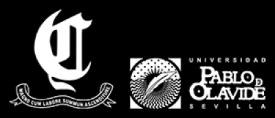

Aquí les enseñamos la lista de los siguientes partidos del club de rugby ciencias olavide:
- (2020) 13 de Diciembre: Partido amistoso senior contra los Tartessos de huelva
- (2021) 23 de Enero: Torneo amistoso sub-18 con el equipo de Carmona, el club de rugby Coria Samurais y las zebras de San José de la Rinconada
- (2021) 7 de Febrero: Comienzo de la liga senior con el partido contra los All-Hams
- (2021) 20 de Febrero: Segundo partido de la liga senior contra los Tartessos
- (2021) 13 de Marzo: tercer partido de la liga senior contra el club de rugby Coria Samurais
- Los siguientes partidos serán confirmados más adelante si las condiciones son favorables para la realización de los eventos
